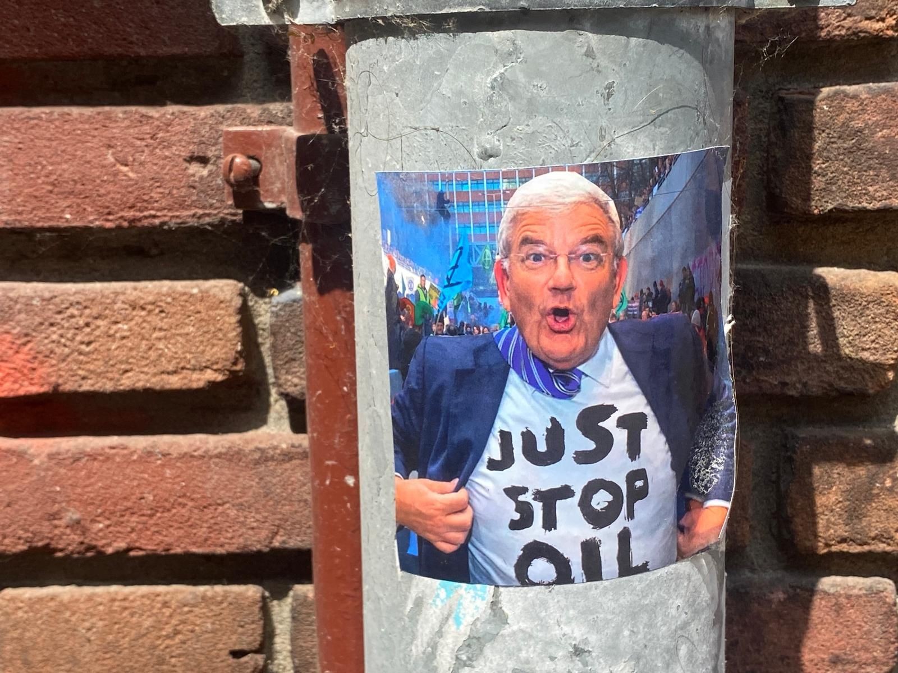

Vector Map

We walked around the city center with ArcGISOnline and decided to collect data on political posters/sticker/graffitti around the center. We divided our data into 4 sub-categories: Anti-system, Pro-palestine, Environmentalist & Political Party Promo.
Using the tool of ArcGISonline proved to be hard to map as we desired. We wanted to check density in proximity to popular student hangout spots, to see if perhaps there was a spatial correlation to more political sentiment and whereabouts of students. To show this, I found a layer in Arc GIS called “Popular pubs among Utrecht students” or Populaire kroegen onder Utrechtse studenten. These are the red and yellow dots seen on screen
Within the polygon that encomprises the points of political messages and the popular bars, I color-coded a density indicator for places with a higher amount of messages per point. The values 0, 3 and 2 are indicators of messages-per-point. The clusters with more density per point were overlapping with popular hangout spots of students . I would’ve liked to highlight the different university buildings of UU in the center with another color, to get different spatial organization patterns with the political messages. There was no existing filter with this, and we had a version that did not allow for further exploring since ‘credits’ were short.